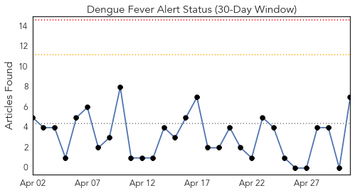
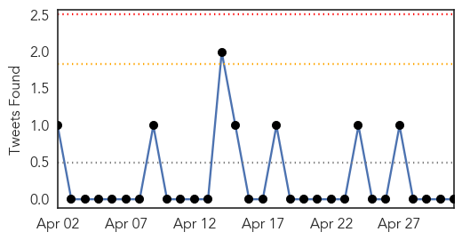
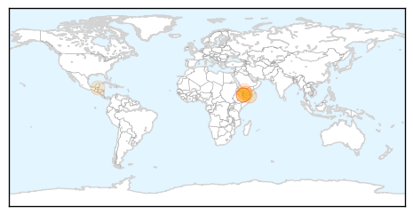
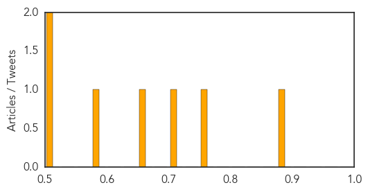
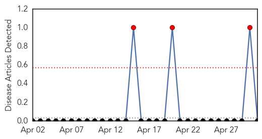
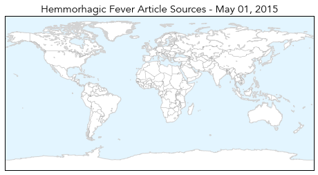
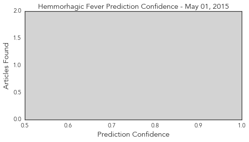

Dengue Fever
30-Day Web Trend
0 alerts, 0 warnings

30-Day Twitter Trend
0 alerts, 0 warnings

Article Locations
Article Confidences
Top Articles:
- 0.889
- Yemen violence kills 1,244, injures 5,044: WHO
- 0.764
- 1 244 dead, 5 044 injured in Yemen violence -WHO
- 0.715
- WHO Says Yemen Violence Has Killed 1,244, Hurt 5,044 — Naharnet
- 0.664
- Yemen violence kills 1,244, injures 5,044: WHO
- 0.579
- Yemen violence kills 1,244, injures 5,044: WHO
- 0.504
- Vector Control Unit undergoes 4 day workshop
- 0.503
- UN set for Yemen emergency talks as relief ops threatened
Top Tweets:
-
No tweets found for May 01, 2015
Hemmorhagic Fever
30-Day Web Trend
3 alerts, 0 warnings

30-Day Twitter Trend
0 alerts, 0 warnings

Article Locations
Article Confidences
Top Articles:
-
No articles found for May 01, 2015
Top Tweets:
-
No tweets found for May 01, 2015